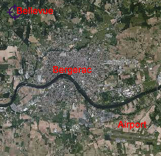

Directions
Getting there and away

By Air
There are flights in and out of Bergerac airport from 11 airports in the UK
- Birmingham
- Bristol
- East Midlands
- Edinburgh
- Exeter
- Leeds Bradford
- Liverpool
- London City
- London Stansted
- Manchester
- Southampton
These are operated by British Airways, FlyBe and Ryan Air, some of them are seasonal. The barn is a 10 minute drive/taxi from Bergerac airport. The next closest airport is Bordeaux which is served by several large airlines and is one hour and 10 minutes drive away using
the motorway.
You can compare rates for car hire at Bergerac Airport
here
Driving
Ferries operate from many ports in the UK to Caen or Calais. It is an 8-9 hour drive from Calais to Bergerac.